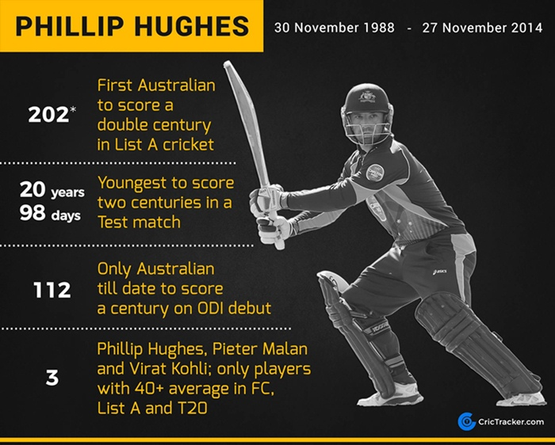

- Test Matches: In 26 Tests, Hughes scored 1,535 runs at an average of 32.65, including three centuries and seven fifties.
- ODIs: In 25 matches, he amassed 826 runs at an average of 35.91, with two centuries and four fifties.
- First-Class Cricket: Hughes played 114 matches, scoring 9,023 runs at an impressive average of 46.51, including 26 centuries and 46 fifties.